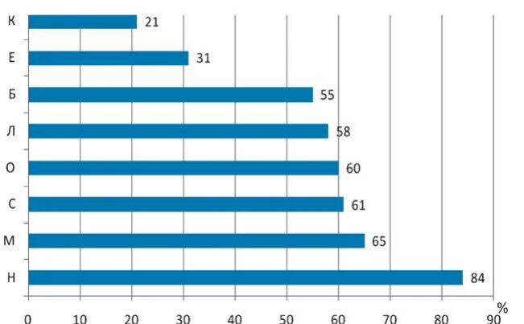
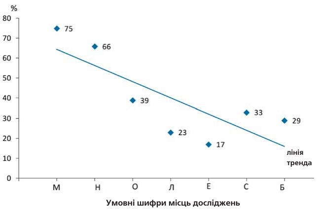
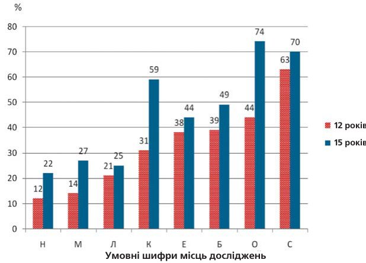
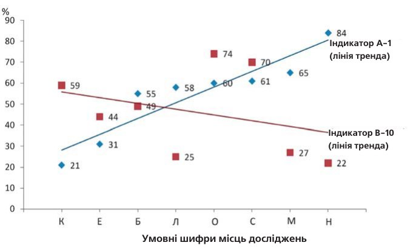
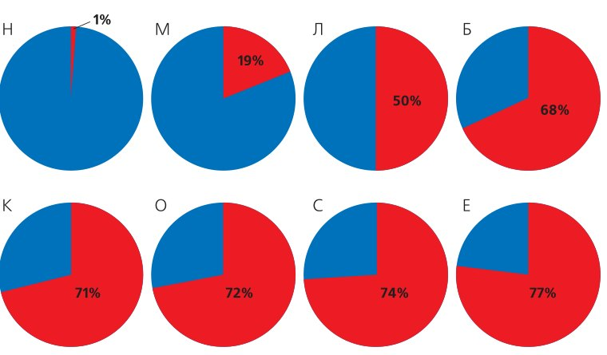
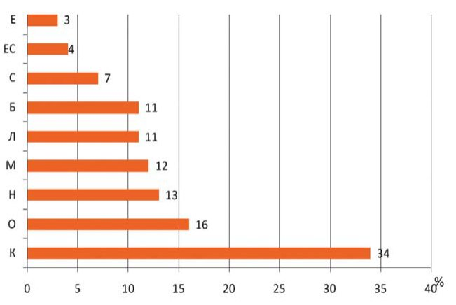
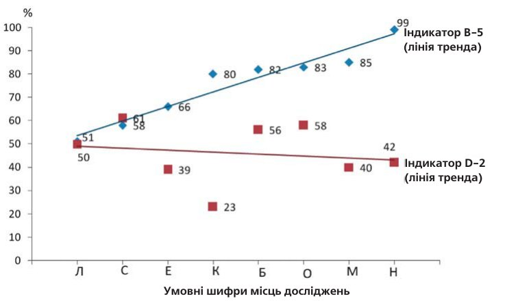

Профілактика · журнал «ДентАрт» 2013 №4 (73)
Моніторинг стоматологічного здоров'я дітей за допомогою європейських індикаторів
MONITORING OF ORAL HEALTH OF CHILDREN BY THE EUROPEAN INDICATORS
Однією з найважливіших складових будь-якої системи стоматологічної допомоги населенню є моніторинг її якості, яка, у свою чергу, оцінюється ефективністю первинної профілактики.5 У кожній країні певним чином ведеться облік стоматологічної захворюваності дітей і дорослих за звітами стоматологічних лікувально-профілактичних установ, за даними описової епідеміології та ін., проте критерії для оцінки стоматологічного здоров'я застосовуються різні, що ускладнює або робить неможливим використання позитивного міжнародного досвіду в цій сфері.
Найбільш поширений критерій визначення рівня захворюваності зубів — індекс КПУ, але він фіксує тільки результат лікувально-профілактичної роботи, а детермінанти хвороби і процес функціонування системи залишаються не розкритими. Так, «низький» рівень КПУ постійних зубів у 12-річних дітей може заспокоїти організаторів охорони здоров'я, але невиявлені чинники ризику у цих дітей можуть проявитися у вигляді хвороб у пізніший період, коли заходи первинної профілактики вже недостатньо ефективні.
Як відомо, у країнах Західної Європи, в Австралії, США та ін. країнах за останні 25-30 років спостерігалося колосальне зменшення каріозної хвороби — у ряді країн досягнуто рівня 0,6-0,7 КПУ постійних зубів у 12-річних дітей,4, 7 проте науковий світ і стоматологічна громадськість стурбовані високою захворюваністю карієсом груп дітей підвищеного ризику і хворобами періодонту, які погано піддаються контролю, особливо у дорослого населення. У зв'язку з цим Європейська Комісія з охорони здоров'я спільно зі Всесвітньою організацією охорони здоров'я запропонувала список істотних індикаторів стоматологічного здоров'я населення, за допомогою яких можна ефективніше здійснювати моніторинг програм первинної профілактики і якості стоматологічної допомоги.2, 6
Використовуючи найбільш показові індикатори, країни ЄС провели обстеження дітей і підлітків, за результатами якого було виявлено цілу низку взаємозв'язаних поведінкових проблем і стоматологічного статусу.1, 3 Таким чином, міжнародно визнані індикатори стоматологічного здоров'я дозволяють виявити недоліки в системі охорони стоматологічного здоров'я і відкривають перспективи для їх усунення. Метою цього дослідження в міжнародному пілотному проекті стала оцінка прийнятності Європейських індикаторів стоматологічного здоров'я для моніторингу ефективності комунальних програм первинної профілактики стоматологічних захворювань і лікувально-профілактичної роботи серед дитячого населення шкільного віку.
Організація міжнародного пілотного проекту і методи дослідження
Після доповіді про Європейські індикатори стоматологічного здоров'я на XI Конгресі стоматологів СНД у квітні 2013 р. у м. Алмати (О. В. Шевченко) зацікавленим країнам були надані нові карти і анкети ВООЗ8 для дослідження стоматологічного статусу двох «ключових» вікових груп дітей — 12 і 15 років — по 100 осіб у кожній групі. До кінця травня 2013 р. було отримано результати досліджень з 8 місцевостей шести країн (у дужках вказано умовні шифри місць досліджень для зручності публікації ілюстративних матеріалів): м. Бішкека (Б), м. Єревана (Є), с. Керпинень, Молдова (К), м. Львова (Л), м. Мінська (М), м. Новосибірська (Н), м. Одеси (О) і м. Самари (С). Стоматологічне дослідження і анкетування провели досвідчені фахівці з профілактики, організації стоматологічної допомоги і дитячої стоматології. У рамках цього пілотного проекту вибір місцевості і шкіл для дослідження дітей, а також дотримання адміністративних і етичних правил здійснювалися на місцевому рівні; карти стоматологічного статусу і анкети були однаковими для всіх.
Проект не мав на меті визначити достовірність можливих відмінностей даних досліджень про стоматологічну захворюваність дітей у різних країнах, оскільки вони добре відомі. Стоматологічний статус школярів двох вікових груп визначали за такими критеріями: поширеність та інтенсивність карієсу постійних зубів, індекс гігієни рота за Гріном-Вермильоном, поширеність кровоточивості ясен, потреба у профілактиці і стоматологічному лікуванні. Дані оглядів заносили в карту стоматологічного статусу ВООЗ; анонімний запитальник для 15-річних школярів містив 13 питань, що стосуються режиму чищення зубів, використання зубних паст з вмістом фтору, самооцінки стану і вигляду своїх зубів, частоти і причин звернень до стоматолога, випадків зубного болю. Усі критерії стоматологічного статусу і самооцінки анкетованих відповідали 15 найсуттєвішим Європейським індикаторам стоматологічного здоров'я, прийнятність яких для моніторингу лікувально-профілактичної роботи оцінювалася шляхом порівняння показників індикаторів об'єктивної і суб'єктивної оцінок стоматологічного здоров'я і чинників, що впливають на нього. Отримані у пілотному дослідженні дані були ретельно вивірені і узгоджені з дослідниками. Відповідальність за можливі недостатньо обґрунтовані висновки про прийнятність різних індикаторів у різних ситуаціях лежить на першому авторові статті, який з вдячністю прийме зауваження для подальшого розвитку міжнародної співпраці у цій сфері.
Результати і обговорення
Одним з найважливіших завдань цього дослідження була адекватна оцінка прийнятності добре відомих показників стоматологічного статусу — поширеності та інтенсивності карієсу зубів, які в системі Європейських індикаторів позначені В-12, В-13 відповідно. У таблиці 1 подано дані середнього КПУ постійних зубів 12-річних дітей у порядку зростання від 1,4 у місцевості К до 3,8 у місцевості Б. У рядку нижче вказано поширеність карієсу постійних зубів у цих же дітей. На наш погляд, вдалося з великою часткою вірогідності довести прийнятність показника «поширеність карієсу зубів» для оцінки стоматологічного статусу 12-річних дітей, в інформативності якого нерідко сумніваються.
Окремі випадки відхилень від очевидної закономірності, можливо, пов'язані з кількістю досліджених дітей, яких, на нашу думку, повинно бути не менше 100 в одній віковій групі. Така сама закономірність спостерігалася при зіставленні інтенсивності і поширеності карієсу зубів у 15-річних підлітків (див. таблицю. 1). Таким чином, обидва індикатори були досить інформативними і можуть застосовуватися разом або окремо для моніторингу програм профілактики.
Ще важливіший індикатор стоматологічного здоров'я дітей, який, на жаль, рідко використовується на практиці в країнах СНД (можливо, у зв'язку з великою поширеністю карієсу зубів), — це «пропорція здорових (без карієсу зубів) дітей» — індикатор В-12. Результати дослідження цього індикатора подано на мал. 1. Використання цих індикаторів важливе ще й тому, що Глобальні цілі ВООЗ і завдання в національних програмах профілактики у багатьох країнах орієнтовані на відсоток здорових дітей.

| Вікові групи | Індикатори | Умовні шифри місць досліджень | |||||||
|---|---|---|---|---|---|---|---|---|---|
| К | М | Н | Л | Е | О | С | Б | ||
| 12 років | Інтенсивність (середній КПУ) | 1,4 | 1,6 | 2,4 | 2,8 | 3,1 | 3,2 | 3,5 | 3,8 |
| Поширеність (%) | 59 | 62 | 71 | 76 | 86 | 74 | 89 | 90 | |
| 15 років | Інтенсивність (середній КПУ) | 2,5 | 2,7 | 4,0 | 4,6 | 4,6 | 43,8 | 5,6 | 5,4 |
| Поширеність (%) | 67 | 76 | 84 | 92 | 94 | 70 | 94 | 97 | |
У всіх програмах первинної профілактики стоматологічних захворювань у країнах СНД гігієна рота у дітей займає перше місце серед рекомендованих профілактичних заходів. Проте до списку істотних Європейських індикаторів показники гігієни рота не включено. Замість індексу гігієни запропоновано індикатор А-1 — «дотримання рекомендованого режиму чищення зубів». На мал. 2 подано результати наших досліджень значущості цього індикатора. З’ясувалося, що рекомендоване чищення зубів двічі на день виконують не всі анкетовані 15-річні підлітки і чіткого взаємозв'язку індикатора А-1 з такими важливими показниками стоматологічного здоров'я, як поширеність та інтенсивність карієсу зубів, визначити не вдалося. У той же час досить переконливими були взаємозв'язки відсотка здорових дітей (індикатор В-12) з використанням зубних паст з вмістом фтору — індикатором А-4 (мал. 3). На мал. 3 позначення місць досліджень розташовані в порядку зменшення відсотка здорових дітей і визначена тенденція зменшення відсотка дітей, що використовують зубні пасти з вмістом фтору, від 75% до 17%.


Великою проблемою у національних системах моніторингу програм профілактики є адекватна оцінка стану періодонту (пародонту). Раніше рекомендований ВООЗ індекс CPITN (комунальний періодонтальний індекс потреби в лікуванні) виявився дорогим і складним для відтворюваності. У Європейських індикаторах запропоновано просте визначення кровоточивості ясен у дітей («визначається», «не визначається») (індикатор В-10), глибини зубо-ясенних кишень і втрати прикріплення періодонту у дорослих. Результати цього дослідження поширеності хвороб періодонту за індикатором «кровоточивість ясен» у 12-15-річних дітей подано на мал. 4. Спостерігалися великі відмінності даних з різних місць досліджень, що може бути пов'язано з різними методичними підходами до визначення кровоточивості ясен. Ясна річ, потрібен чіткий опис методу (WHO Basic Methods, 5th Ed., 2013, у друці) і, можливо, клінічне калібрування дослідників. Проте ми звернули увагу на певну закономірність протилежної спрямованості індикатора В-10 та індикатора А-1 (мал. 5). Враховуючи доведеність ролі незадовільної гігієни рота як індикатора ризику виникнення хвороб періодонту, можна позитивно ставитися до прийнятності показника «кровоточивість ясен» для оцінки медичної ефективності профілактики хвороб періодонту у дітей.


Процес надання лікувально-профілактичної стоматологічної допомоги дітям у країнах СНД, як правило, оцінюється за кількістю санованих, кількістю пломб, співвідношенням вилікуваних зубів до видалених, кількістю УОП. У стоматологічній літературі нерідко можна зустріти критичне ставлення до цих застарілих показників. У системі Європейських індикаторів пропонується кілька критеріїв для оцінки «процесу» і «результатів». У таблиці 2 вміщено дані досить показового взаємозв'язку «потреби у невідкладному стоматологічному лікуванні» і «кількості видалених постійних зубів». Показник «потреба» у таблиці подано у порядку зростання від 0 до 30%. За одним винятком: «кількість видалених зубів» також зростає від 0 до 90 на 1000 12-річних дітей і від 27 до 240 на 1000 15-річних. Здається доказовим, що чим більше дітей потребують невідкладної стоматологічної допомоги (на момент огляду), тим більше видалених зубів. Отже, ці індикатори не лише прийнятні для моніторингу процесу, але й корисні для планування своєчасної вторинної профілактики, яка має на меті запобігання видаленню постійних зубів у дітей віком до 18 років (WHO, 2008).
| Вік | Індикатори | Умовні шифри місць досліджень | |||||||
|---|---|---|---|---|---|---|---|---|---|
| Н | М | Л | С | О | К | Е | Б | ||
| 12 років | Потреба | 0 | 2 | 2 | 9 | 10 | 11 | 13 | 30 |
| Видалені зуби на 1000 дітей | 0 | 4 | 10 | 20 | 60 | 80 | 90 | 70 | |
| 15 років | Видалені зуби на 1000 дітей | 27 | 5 | 90 | 20 | 160 | 370 | 150 | 240 |
Ще один дуже простий і легко вимірюваний індикатор — В-9 – частка компонента «К» (нелікований карієс) в індексі КПУ зубів. На мал. 6 подано ці частки компонента «К» від 1% до 77%.

Безперечно, що більший або менший відсоток нелікованого карієсу залежить від ефективності системи стоматологічної допомоги дітям. При найвищому КПУ, в цьому проекті — 3,8, щорічний приріст карієсу постійних зубів становить приблизно 0,6. Компонент «К» у цих дітей на час огляду був 3,0. Отже, цей показник формувався протягом приблизно 5 років через відсутність або незадовільне систематичне стоматологічне лікування дітей у віковий період від 6 до 12 років. Слід зазначити, що компонент «К» у структурі КПУ добре відомий зі звітів і наукових публікацій в усіх країнах, проте ця інформація використовується недостатньо для оцінки системи стоматологічної допомоги дітям. Прийняття Європейських індикаторів сприятиме цілеспрямованішому їх застосуванню для вдосконалення лікувально-профілактичної роботи серед дітей.
У списку істотних Європейських індикаторів досить велика кількість суб'єктивних критеріїв стоматологічного здоров'я, що базуються на анкетуванні населення, у тому числі й підлітків. Один з них — пропорція підлітків, що зазнавали незручностей у спілкуванні через вигляд своїх зубів (індикатор D-4). Цей індикатор належить до соціальних обмежень через погане здоров'я і якість життя людей. Результати цього дослідження — на мал. 7. У країнах ЄС у середньому 4% підлітків зазнають незручностей через вигляд своїх зубів.4 У нашому проекті дані індикатора D-4 значно варіюють, що диктує необхідність оцінювати спадкоємність цього індикатора у поєднанні з іншими критеріями стоматологічного здоров’я.

Згідно з рекомендаціями ВООЗ, залежно від рівня стоматологічної захворюваності та економічних умов профілактичні огляди дітей і лікування, якщо необхідно, проводять від 1-го разу на 2-3 роки до 2-х разів на рік.5 У країнах, що успадкували радянську систему планової санації, в основному зберігається тенденція щорічних профілактичних оглядів дітей шкільного віку. За даними анкетування у цьому дослідженні, за минулі 12 місяців до моменту огляду від 51 до 99% 15-річних школярів були викликані або самостійно звернулися до стоматолога (мал. 8). Як уже зазначалося, частота стоматологічних оглядів дітей визначається не лише їхньою захворюваністю, але й низкою інших чинників, які в цьому дослідженні не враховувалися.
Тому неможливо обґрунтовано сформулювати якісь рекомендації, хоча слід звернути увагу на певну чутливість індикатора D-2 — «зубний біль» (відсоток дітей, що зазнали протягом року зубного болю) до індикатора В-5 — «відсоток дітей, що звернулися протягом року до стоматолога» (див. мал. 8). Можна вважати, що обидва індикатори досить інформативні і прийнятні для моніторингу процесу надання лікувально-профілактичної стоматологічної допомоги дітям шкільного віку.

Висновок
Високопрофесійна група фахівців у галузі профілактики і дитячої стоматології взяла участь у пілотному проекті у 8 місцевостях шести країн з дослідження прийнятності 15 істотних Європейських індикаторів стоматологічного здоров'я населення, запропонованих Єврокомісією з охорони здоров'я і Всесвітньою організацією охорони здоров'я для моніторингу ефективності програм первинної профілактики стоматологічних захворювань і оцінки результативності лікувально-профілактичної стоматологічної допомоги.
За результатами дослідження визначена досить висока інформативність більшості вивчених індикаторів, що дає підставу рекомендувати нову систему в практичну охорону здоров'я зацікавлених країн. Рекомендується використовувати не одиничні індикатори, а їх комплекс, який повинен включати як об'єктивні (за результатами стоматологічного дослідження), так і суб'єктивні (за результатами анкетування) критерії. Необхідно переглянути підходи до визначення кількості досліджуваних дітей однієї вікової групи в одній місцевості у бік збільшення до 100 осіб, що більшою мірою гарантує надійність результатів дослідження.
Використання міжнародно визнаних індикаторів стоматологічного здоров'я дозволить не лише застосовувати на практиці перевірені, надійні методи, але й порівнювати результати з іншими регіонами і країнами, що може сприяти швидшій реалізації позитивного досвіду в національних системах стоматологічної допомоги населенню, а це, у свою чергу, сприятиме поліпшенню здоров'я і якості життя людей у кожній країні, зацікавленій у міжнародній співпраці в галузі охорони здоров'я населення.
Література
- A Nordic Project of Quality Indicators for Oral Health Care. Helsinki, Finland, 2010; http://www.thl.fi
- Bourgeois D.M. et al. A Selection of Essential Oral Health Indicators. 2005 Catalogue.
- Euro Barometer 72.3 Report. Oral Health TNS. Brussels, 2010, 90 p.
- Marthaller T.M. Changes in Dental Caries 1953-2003. Caries Research, 2004, v.38. Р.173-181.
- World Health Organization. Planning of Oral Health Services, WHO OP -53, WHO Geneva, 1980, 49 p.
- World Health Organization. Core Health Indicators, WHO, 2008 http://apps.who.int/database/core
- World Health Organization. Country Oral Health Profiles, WHO 2010.
- World Health Organization. Oral Health Surveys Methods, 5th Ed., WHO Geneva, 2013 (in press).